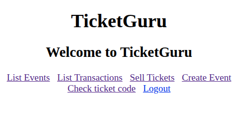
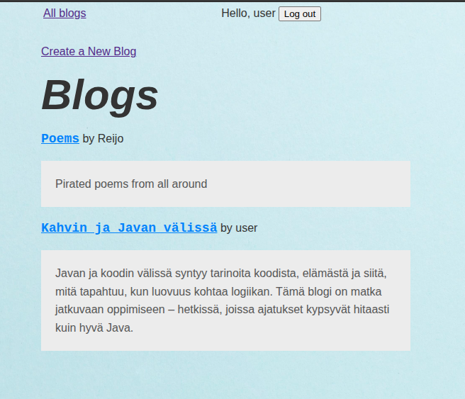
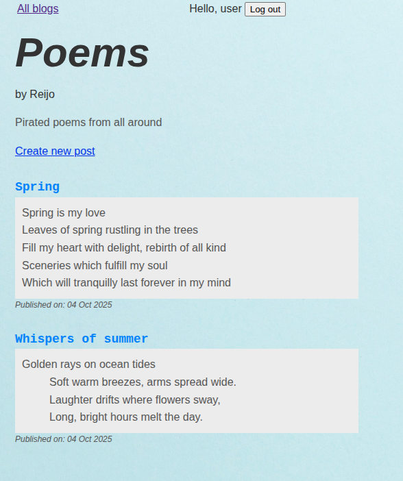

Projektit
Tetris-peli
Tetris-klooni toteutettuna Java 1.4:llä ja Swing-käyttöliittymäkirjastolla 2000-luvun alussa. Sisältää täyden pelimekaniikan, pistelaskurin ja eri vaikeustasot.
 Java
Swing
OOP
Java
Swing
OOP
Lipunmyyntisovellus
Haaga-Helian Ohjelmistoprojekti 1 -kurssin ryhmäharjoitustyönä tehty lipunmyyntijärjestelmä, jossa käytetty Spring Bootia, Javascriptiä ja PostgreSQL-tietokantaa.
 Java
Spring Boot
REST API
PostgreSQL
Java
Spring Boot
REST API
PostgreSQL
Blogialusta
Backend-ohjelmointi -kurssin harjoitustyönä tehty blogialusta.
  Java Spring Boot Thymeleaf